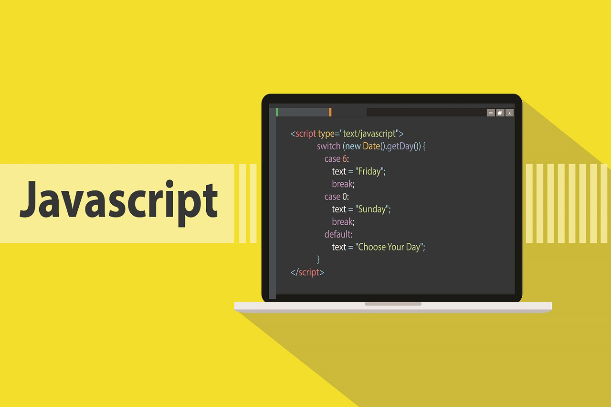

JavaScript1995년 당시 약 90%의 시장 점유율로 웹 브라우저 시장을 지배하고 있던 넷스케이프 커뮤니케이션즈(Netscape comunications)는 정적인 HTML을 동적으로 표현하기 위해 경량의 프로그래밍 언어를 도입하기로 결정했다. 그래서 탄생한 것이 브렌던 아이크(Brendan Eich)가 개발한 자바스크립트이다.
자바스크립트는 1996년 3월 넷스케이프 커뮤니케이션즈의 웹 브라우저인 Netscape Navigator 2에 탑재되었고 “Mocha”로 명명되었다. 그해 9월 “LiveScript”로 이름이 변경되었고, 12월 “JavaScript”로 최종 명명되었다.